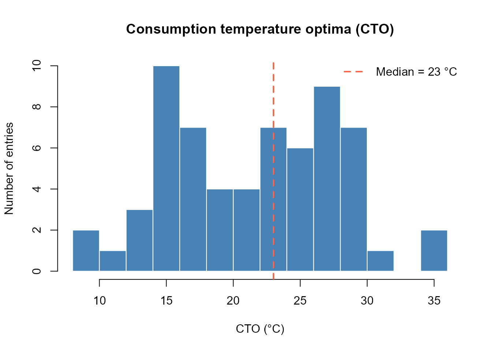

Exploring the Species Parameter Database
Hans Ttito
2026-03-29
Source:vignettes/fb4-species-database.Rmd
fb4-species-database.RmdOverview
fb4package ships with fish4_parameters, a
curated database of bioenergetics parameter sets for more than 70 fish
species compiled from the primary literature and from Fish Bioenergetics
4.0 (Deslauriers et al. 2017). This vignette shows how to:
- Inspect the database structure
- Search for species by name or family
- Understand the parameter organisation (equations and life stages)
- Compare key parameters across species
- Use database parameters in a simulation
1. Loading and inspecting the database
data(fish4_parameters)
n_entries <- length(fish4_parameters)
cat("Total entries in database :", n_entries, "\n")
#> Total entries in database : 73
cat("First 12 entries:\n")
#> First 12 entries:
print(head(names(fish4_parameters), 12))
#> [1] "Alosa pseudoharengus" "Gadus morhua"
#> [3] "Brevoortia tyrannus" "Thymallus arcticus baicalensis"
#> [5] "Clupea harengus" "Anchoa mitchilli"
#> [7] "Hypophthalmichthys nobilis" "Coregonus hoyi"
#> [9] "Pomatomus saltatrix" "Lepomis macrochirus"
#> [11] "Salvelinus fontinalis" "Ameiurus nebulosus"Each entry is a named list keyed by the species’ scientific name.
2. Database structure
Every entry follows the same hierarchical structure:
fish4_parameters[["Species name"]]
├── species_info # taxonomic information
├── life_stages # named list of life-stage parameter sets
│ ├── juvenile # (or adult, larval, etc.)
│ │ ├── consumption
│ │ ├── respiration
│ │ ├── activity
│ │ ├── sda
│ │ ├── egestion
│ │ ├── excretion
│ │ └── predator # energy density equation
│ └── adult # (if present)
└── sources # literature references
# Inspect a single entry
chinook <- fish4_parameters[["Oncorhynchus tshawytscha"]]
cat("=== Species info ===\n")
#> === Species info ===
print(chinook$species_info)
#> $scientific_name
#> [1] "Oncorhynchus tshawytscha"
#>
#> $common_name
#> [1] "Chinook salmon (adult)"
#>
#> $family
#> [1] "Salmonidae"
#>
#> $order
#> [1] "Salmoniformes"
cat("\n=== Life stages available ===\n")
#>
#> === Life stages available ===
print(names(chinook$life_stages))
#> [1] "adult"
cat("\n=== Sources ===\n")
#>
#> === Sources ===
print(chinook$sources)
#> [1] "Stewart & Ibarra 1991; Plumb & Moffit 2015"3. Searching the database
By scientific name (partial match)
# Find all Oncorhynchus species
onco_keys <- grep("Oncorhynchus", names(fish4_parameters),
value = TRUE, ignore.case = TRUE)
cat("Oncorhynchus species in database:\n")
#> Oncorhynchus species in database:
print(onco_keys)
#> [1] "Oncorhynchus tshawytscha" "Oncorhynchus kisutch"
#> [3] "Oncorhynchus clarki" "Oncorhynchus gorbuscha"
#> [5] "Oncorhynchus mykiss" "Oncorhynchus nerka"By common name
# Extract all common names and search
common_names <- sapply(fish4_parameters, function(x) {
x$species_info$common_name %||% NA_character_
})
trout_idx <- grep("trout|salmon|char", common_names,
value = FALSE, ignore.case = TRUE)
cat("Salmonid entries (trout / salmon / char):\n")
#> Salmonid entries (trout / salmon / char):
print(common_names[trout_idx])
#> Salvelinus fontinalis Salmo trutta
#> "Brook Trout (juvenile & adult)" "Brown Trout"
#> Salvelinus confluentus Oncorhynchus tshawytscha
#> "Bull trout (adult)" "Chinook salmon (adult)"
#> Oncorhynchus kisutch Oncorhynchus clarki
#> "Coho salmon (adult)" "Cutthroat trout"
#> Salvelinus namaycush Oncorhynchus gorbuscha
#> "Lake trout (adult)" "Pink salmon (adult)"
#> Oncorhynchus mykiss Oncorhynchus nerka
#> "Rainbow Trout (juvenile)" "Sockeye salmon (adult)"4. Listing available life stages
# Summary of life stages per species
stage_summary <- sapply(fish4_parameters, function(x) {
paste(names(x$life_stages), collapse = ", ")
})
# Show species that have more than one life stage
multi_stage <- stage_summary[sapply(strsplit(stage_summary, ", "), length) > 1]
cat("Species with multiple life stages (first 8):\n")
#> Species with multiple life stages (first 8):
print(head(multi_stage, 8))
#> Alosa pseudoharengus Gadus morhua
#> "adult, yearling, yoy, larval" "juvenile_and_adult, unknown"
#> Clupea harengus Lepomis macrochirus
#> "yoy, adult, juvenile" "adult, juvenile"
#> Perca fluviatilus Engraulis encrasicolus
#> "1_gram, 100_gram, larval_yoy" "adult, egg_larval, juvenile"
#> Esox masquinongy Cololabis saira
#> "adult, juvenile" "adult, juvenile"5. Comparing consumption parameters across species
The maximum consumption rate is governed by:
where CA scales the intercept and CB the weight exponent. Higher CA values indicate a higher maximum ration relative to body weight.
# Extract CA, CB, CEQ for all entries (first life stage)
param_table <- do.call(rbind, lapply(names(fish4_parameters), function(sp) {
entry <- fish4_parameters[[sp]]
stage <- names(entry$life_stages)[1]
cons <- entry$life_stages[[stage]]$consumption
data.frame(
Species = sp,
Stage = stage,
CEQ = cons$CEQ %||% NA,
CA = cons$CA %||% NA,
CB = cons$CB %||% NA,
CTO = cons$CTO %||% NA,
CTM = cons$CTM %||% NA,
stringsAsFactors = FALSE
)
}))
# Show top 10 by CA (highest maximum ration)
param_table_sorted <- param_table[order(-param_table$CA, na.last = TRUE), ]
knitr::kable(
head(param_table_sorted[, c("Species", "Stage", "CEQ", "CA", "CB", "CTO", "CTM")], 10),
caption = "Top 10 entries by CA (maximum consumption coefficient)",
digits = 4
)| Species | Stage | CEQ | CA | CB | CTO | CTM | |
|---|---|---|---|---|---|---|---|
| 47 | Notropis bairdi | unknown | 2 | 4.0330 | -1.0589 | 35.0 | 41.6 |
| 43 | Fundulus zebrinus | unknown | 2 | 3.5999 | -1.1602 | 35.0 | 43.0 |
| 8 | Coregonus hoyi | adult | 2 | 1.6100 | -0.3200 | 16.8 | 26.0 |
| 26 | Coregonus spp. | unknown | 2 | 1.6100 | -0.3200 | 16.8 | 26.0 |
| 31 | Coregonus clupeaformis | adult | 2 | 1.6100 | -0.3200 | 16.8 | 26.0 |
| 7 | Hypophthalmichthys nobilis | unknown | 2 | 1.5400 | -0.2870 | 26.0 | 38.0 |
| 55 | Hypophthalmichthys molitrix | unknown | 2 | 1.5400 | -0.2870 | 29.0 | 43.0 |
| 3 | Brevoortia tyrannus | juvenile_and_adult | 3 | 1.2940 | -0.3120 | 28.0 | 29.0 |
| 70 | Pomoxis annularis | adult | 2 | 1.2589 | -0.6610 | 24.0 | 32.0 |
| 1 | Alosa pseudoharengus | adult | 3 | 0.8464 | -0.3000 | 16.0 | 18.0 |
Temperature optima distribution
cto_vals <- na.omit(param_table$CTO)
hist(cto_vals,
breaks = 15,
main = "Consumption temperature optima (CTO)",
xlab = "CTO (°C)",
ylab = "Number of entries",
col = "steelblue",
border = "white")
abline(v = median(cto_vals), col = "tomato", lwd = 2, lty = 2)
legend("topright", legend = paste("Median =", round(median(cto_vals), 1), "°C"),
col = "tomato", lty = 2, lwd = 2, bty = "n")
Distribution of consumption temperature optima (CTO) across all database entries.
6. Predator energy density equations
The database includes three equations for predator (fish) energy density:
| PREDEDEQ | Form | Parameters |
|---|---|---|
| 1 | Daily interpolation |
ED_data or ED_ini +
ED_end
|
| 2 | Piecewise linear in weight |
Alpha1, Beta1, Alpha2,
Beta2, Cutoff
|
| 3 | Power function of weight |
Alpha1, Beta1
|
prededeq_vals <- sapply(names(fish4_parameters), function(sp) {
entry <- fish4_parameters[[sp]]
stage <- names(entry$life_stages)[1]
entry$life_stages[[stage]]$predator$PREDEDEQ %||% NA
})
cat("Distribution of PREDEDEQ across database:\n")
#> Distribution of PREDEDEQ across database:
print(table(prededeq_vals, useNA = "ifany"))
#> prededeq_vals
#> 1 2 3
#> 61 11 1When PREDEDEQ = 1 (the most common), the user must
supply ED_ini and ED_end (or a full
ED_data vector) since daily energy density varies with
season and condition factor. See the Introduction vignette for
an example.
7. Building a model directly from the database
# Retrieve brown trout if available, otherwise fall back to first salmonid
target_sp <- grep("Salmo trutta|brown trout",
names(fish4_parameters),
value = TRUE, ignore.case = TRUE)
if (length(target_sp) == 0) {
target_sp <- onco_keys[1] # Fall back to first Oncorhynchus
}
target_sp <- target_sp[1]
cat("Using species:", target_sp, "\n")
#> Using species: Salmo trutta
entry <- fish4_parameters[[target_sp]]
stage <- names(entry$life_stages)[1]
params <- entry$life_stages[[stage]]
info <- entry$species_info
info$life_stage <- stage
# Minimal 60-day setup
days_short <- 1:60
bio_db <- Bioenergetic(
species_params = params,
species_info = info,
environmental_data = list(
temperature = data.frame(Day = days_short,
Temperature = 10 + 3 * sin(pi * days_short / 60))
),
diet_data = list(
proportions = data.frame(Day = days_short, Invertebrates = 1),
prey_names = "Invertebrates",
energies = data.frame(Day = days_short, Invertebrates = 2800)
),
simulation_settings = list(initial_weight = 50, duration = 60)
)
# Supply energy density bounds for PREDEDEQ = 1
bio_db$species_params$predator$ED_ini <- 4000
bio_db$species_params$predator$ED_end <- 4500
res_db <- run_fb4(bio_db,
fit_to = "Weight",
fit_value = 80,
strategy = "binary_search",
verbose = FALSE)
cat(sprintf("Estimated p : %.4f | Final weight : %.1f g\n",
res_db$summary$p_value,
res_db$summary$final_weight))
#> Estimated p : 0.6651 | Final weight : 80.0 g8. Adding a custom species
If your species is not in the database, supply parameters manually in
the same list structure and pass them directly to
Bioenergetic(). See the Introduction vignette for
a full example with Stewart & Ibarra (1991) parameters for Chinook
salmon.
References
Deslauriers D, Chipps SR, Breck JE, Rice JA, Madenjian CP (2017). Fish Bioenergetics 4.0: An R-Based Modeling Application. Fisheries 42(11):586–596. https://doi.org/10.1080/03632415.2017.1377558
Hanson PC, Johnson TB, Schindler DE, Kitchell JF (1997). Fish Bioenergetics 3.0. University of Wisconsin Sea Grant Institute, Report WISSG-97-250.